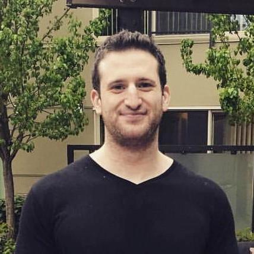

James Robinson
I am a recent graduate of Seattle University, where I earned a master’s degree in software engineering. I am currently looking for opportunities in software engineering, data science, data engineering, GIS, satellite data, and related technical areas where I can build useful, reliable, and data-driven systems.
My path into data started through language. I graduated from the University of Washington with a double major in Japanese and Chinese linguistics. Studying language systems gave me an early interest in structure, patterns, classification, and meaning — ideas that naturally led me toward programming, data analysis, and computational approaches to real-world problems.
After that, I completed programming and data-focused coursework through Udacity, and later participated in a data engineering program through Insight Data Science. Those experiences helped me connect software engineering with larger-scale data workflows, cloud-based processing, and practical analytics systems.
My current work focuses on geospatial processing, environmental prediction, machine learning, GIS, satellite-derived datasets, and interactive visualization. I am especially interested in projects that combine software, data, maps, and real-world environmental systems, but I am also open to broader software and data roles where these skills can be useful.